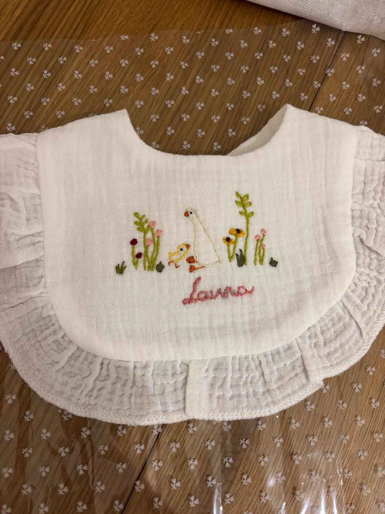
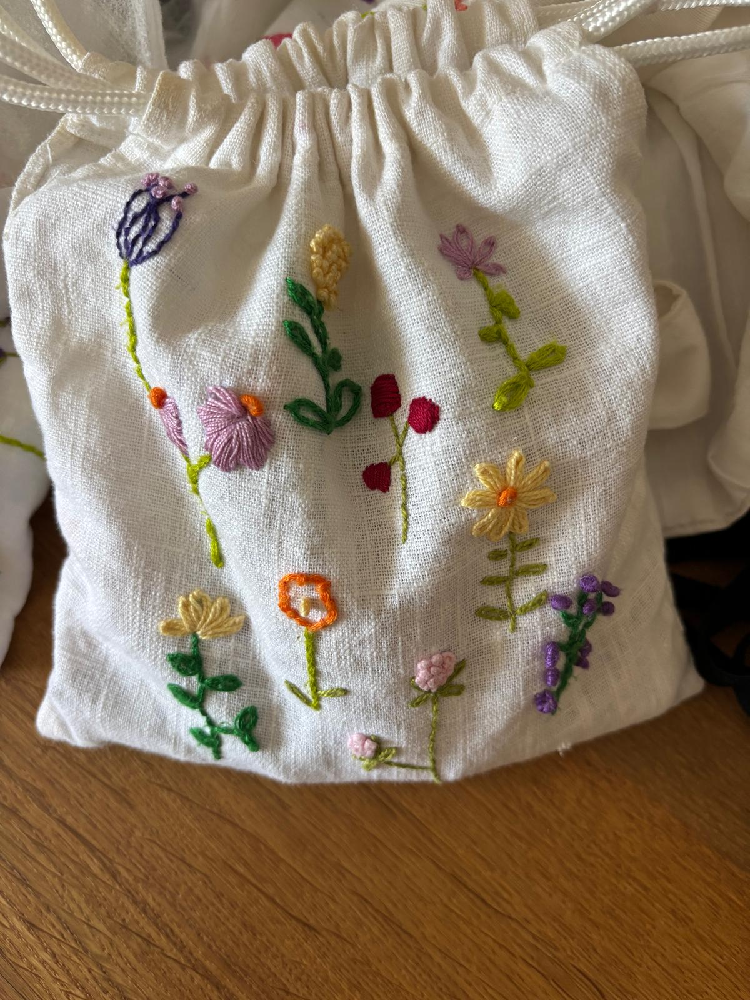

Cuaderno de taller
Historias entre hilos.
Un lugar para acercarte al proceso: cómo nace un diseño, qué cuenta una flor y todo lo que ocurre antes de la última puntada.


Instagram, sin automatismos
El día a día sigue en Instagram.
Aquí guardamos las historias con más detalle. En Instagram compartimos avances, nuevos encargos y pequeñas escenas del taller. El enlace es directo: sin API y sin depender de integraciones externas.